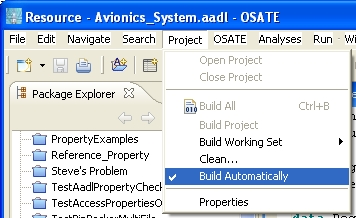

Previous
Next
Previous
Next 
| 4.6 Automatic Build with the AADL Builder |
OSATE has an AADL builder that maintains consistency between AADL text files and AADL
XML files, and propagates any changes to an AADL package or property set that affects other
AADL text files and AADL XML files in the workspace. This builder is implemented through
the Eclipse builder API. The AADL builder is activated through the AADL Perspective. When
the AADL builder is activated the project icon has a decorator in the form of the letter “A”.

Figure 12: The build-related commands in the Eclipse/OSATE “Project” menu.
Eclipse’s automatic build functionality can be enabled and disabled by selecting the “Build
Automatically” command in the “Project” menu; see Figure 12. When the automatic build is
enabled, which is the standard mode of operation in Eclipse, the workspace is rebuilt whenever
a file in the workspace is changed. The builder then regenerates all derived files that are
potentially affected by the change, i.e., it regenerates “.aaxl” files from “.aadl” files (but, as
described below, it can also update files in the other direction).
The “Project > Clean…” command results in a complete rebuild of the workspace or project
as specified in a subsequent dialog window. The clean command causes all derived files to be
regenerated and any derived files for which the source does not exist to be deleted.
If automatic build is not enabled (no check mark next to the menu command), then changes to
the files are tracked by Eclipse but the builder is not automatically invoked. In that case the
“Build All” and “Build Project” commands are enabled in the context menu and can be invoked
to process all changes that occurred to the workspace or selected project, respectively, since
the last invocation of a build.
The AADL builder considers a file that has been changed in an editor as the original file when it
is saved from within that editor. If the AADL text file has been edited and saved, it is the
original file. If the AADL XML file as been edited (by the AADL Object editor or by the
Graphical Editor) it is considered to be the original file. If the AADL text is the original file,
then the AADL XML file is regenerated from the modified AADL text file. If the AADL XML
file is the original file, then the AADL text file is regenerated from the modified AADL XML file.
AADL instance model files are always considered derived from AADL XML files. This means
they are regenerated anytime the AADL XML files they are derived from have been updated
due to edits or regeneration. Currently analysis plug-ins invoked on instance models or
declarative models are not tracked, thus, not automatically applied to the regenerated XML
files.
If an AADL file that contains an AADL specification has been modified, then only that file is
processed by the builder, since other AADL files cannot refer to items in this file. This is due to
the fact that the declared component classifiers are part of the anonymous namespace of an
AADL specification, and that AADL packages and property sets not stored in individually in
separate files are not treated as residing in the global namespace.
If an AADL package or property set in the global namespace is modified, then all AADL files
in the workspace can potentially be affected and all are rebuilt.